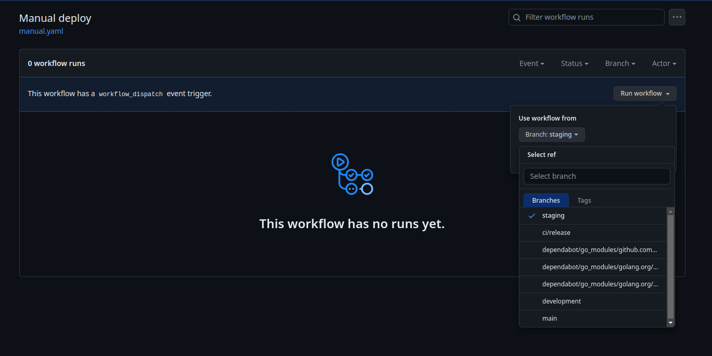

Problem
Masalah yang terjadi adalah, untuk trigger manual ci/cd di github action itu tidak bisa dan dari UI github pada menu Action pun juga tidak tersedia. Kenapa ini penting? dari pengalaman saya, selama ini menggunakan github sebagai repository dan menggunakan portainer sebagai management containernya bukan kubernetes.
Yang terjadi ketika harus revert version pada aplikasi antara deploy ulang dari portainer atau kita revert kode dan melakukan deploy ulang, langkah-langkah yang terjadi cukup ribet menurutku.
Solution
Walaupun di github tidak menyediakan UI untuk mengatur trigger manual, kita bisa melakukan konfigurasi sendiri untuk membuat UI tersebut dan memunculkannya pada github action. Goalnya adalah ketika kita revert aplikasi kita bisa set ke version tertentu ataupun kita juga bisa memilih branch mana yang akan dideploy ulang. Untuk langkah-langkahnya sebagai berikut:
- Buat file
.github/workflows/manual-trigger-ci-cd.ymldi folder.github/workflowsdi repository kita. - Copy kode berikut ke file
manual-trigger-ci-cd.yml
---
name: Manual deploy # Workflow name displayed on GitHub
on:
workflow_dispatch:
jobs:
changelog:
runs-on: ubuntu-latest
steps:
- name: Set Repository ENV variables
run: |
echo "REPO_NAME=${GITHUB_REPOSITORY#$GITHUB_REPOSITORY_OWNER/}" >> $GITHUB_ENV
- uses: actions/checkout@v3
- id: commit
uses: pr-mpt/actions-commit-hash@v2
- name: Setup buildx
uses: docker/setup-buildx-action@v2
- name: Docker build
run: docker build -t aplikasi-svc .
- name: Push docker image latest staging
run: docker push aplikasi-svc
deploy-svc:
needs: deploy-image
runs-on: ubuntu-latest
steps:
- name: Webhook loyalty-svc
id: webhook-request
if: github.ref_name == 'staging'
uses: muhfaris/request-action@v0.1.1
with:
url: $?tag=latest
- name: Make webhook request with image version
if: github.ref_name == 'main'
id: webhook-request
uses: muhfaris/request-action@v0.1.1
with:
url: $?tag=$
- name: Display API Response Status
run: |
echo "Response Status: $"
- name: Display API Response Data
run: |
echo "Response Data: $"
Pada konfigurasi di atas, kita menggunakan workflow_dispatch untuk mengatur trigger manual di github action. Kemudian pada bagian jobs adalah task yang akan dijalankan setelah kita submit trigger manual tersebut. Bagaimana tampilan UInya di github itu akan seperti berikut:

Referensi:
- https://docs.github.com/en/actions/using-workflows/manually-running-a-workflow